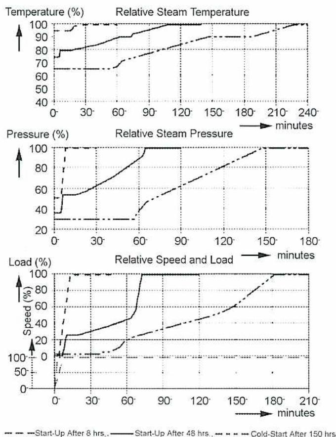
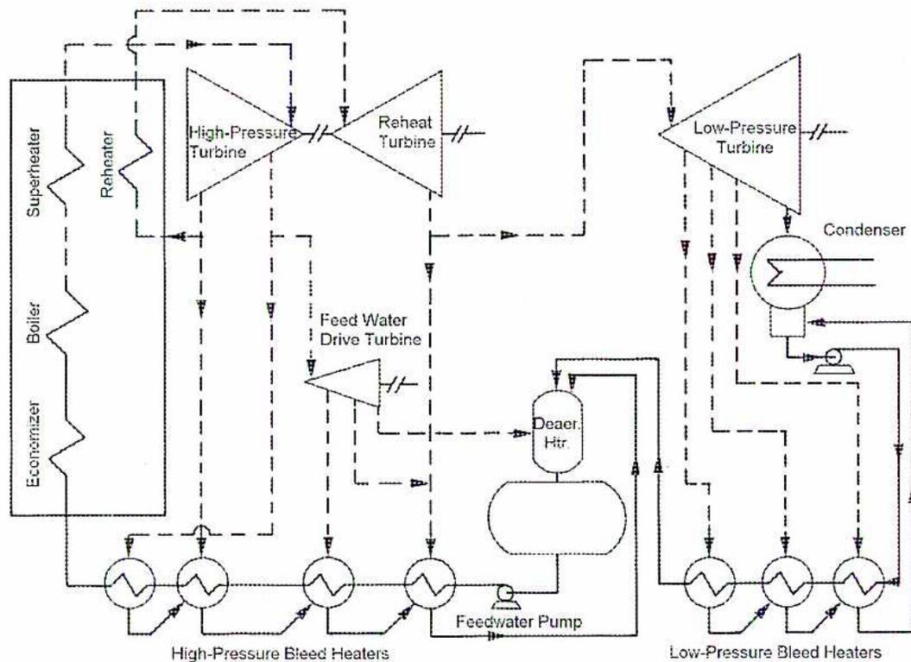
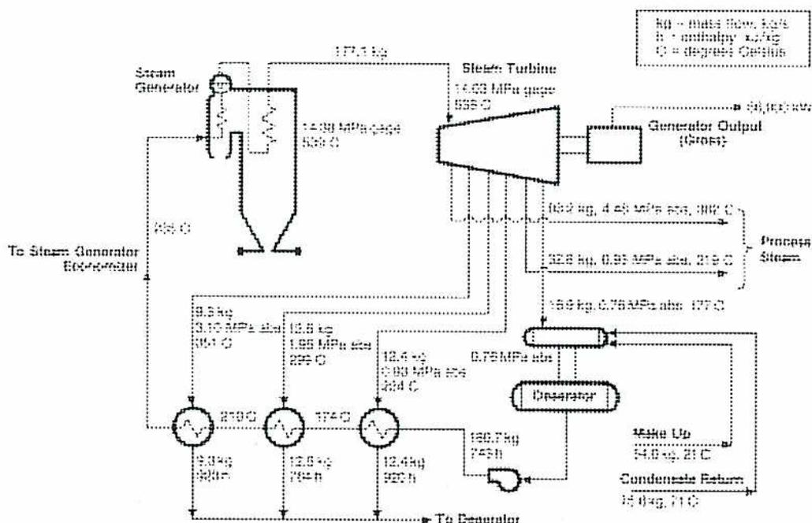
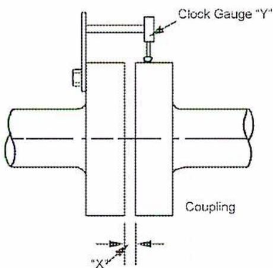
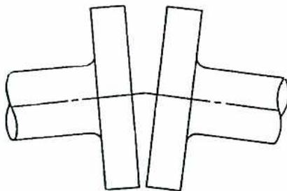
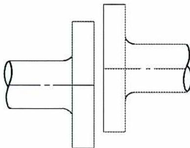
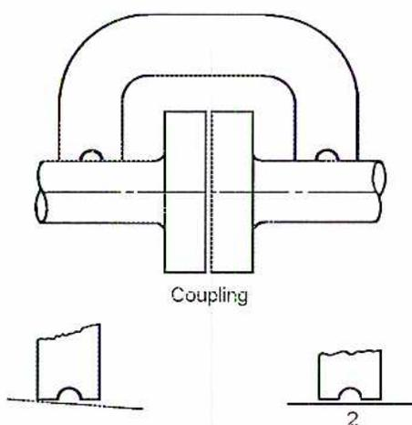
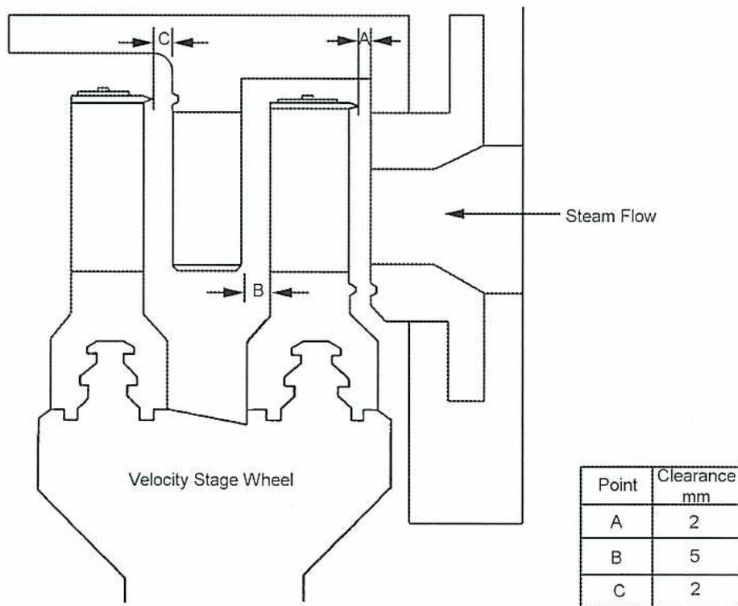
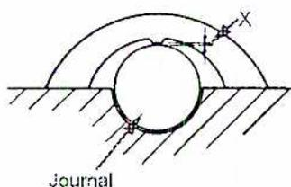
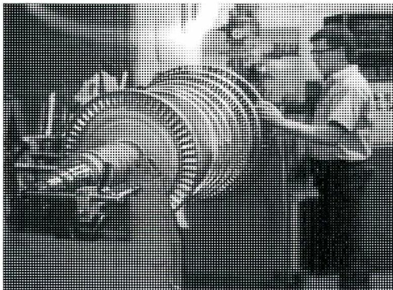

Steam Turbine Operation and Maintenance
3
Learning Outcome
When you complete this learning material, you will be able to:
Discuss procedures for operation and maintenance of a large steam turbine.
Learning Objectives
You will specifically be able to complete the following tasks:
- 1. Describe the detailed hot and cold start-up procedures for a large steam turbine, including safety precautions.
- 2. Describe the detailed shutdown procedure for a large steam turbine including safety precautions.
- 3. Explain what checks are performed on a large steam turbine during normal operation.
- 4. Sketch the flow of steam and condensate through a condensing steam turbine and a non-condensing steam turbine.
- 5. Explain the preventive maintenance requirements for a large steam turbine. Include shaft alignment, bearings, clearances for thrust, blades, shaft seals, correction of blade fouling, erosion and cleaning.
- 6. Describe the purpose of and procedure for static and dynamic balancing.
Objective 1
Describe the detailed hot and cold startup procedures for a large steam turbine, including safety precautions.
STEAM TURBINE START-UP PROCEDURES
Startup procedures for steam turbines vary according to the:
- • Type of turbine
- • Manufacturer's recommendations
- • Size of the turbine
- • Length of time the turbine has been shutdown
The startup procedure described in this module is a generic procedure with steps that can be applied to most steam turbines. As each turbine installation is different it is important to follow the procedures for that turbine as set out by the manufacturer and the owner.
PRE-STARTUP INSPECTION
Before starting any turbine, a thorough inspection of the turbine and related equipment is completed. The inspection commences by checking all applicable documentation of the turbine and its auxiliaries. For example, all work that tradesmen have done is completed and signed off. Locks and tags on auxiliary equipment must be removed. At this stage the control operator checks all controls and valves to make sure they are functioning properly. For example, control valves are stroked and checked in the field to verify proper movement.
Any notes, logs, or readings that are available from other recent start-ups are reviewed. This historical data helps to predict the timing of the startup sequence and the turbine's behaviour regarding vibration, expansion, and critical speeds.
During the field check of the equipment, the field operator verifies that all valves are in the proper position for starting up. Other areas to check include:
- • Pressure gauges and instruments are in the 'ready to run position' with sensing valves open and drains shut.
- • Main steam line traps and vents are open to warm up the steam piping.
- • Equipment is clean and no scaffolding or debris from repairs left around the equipment. Any debris or insulation is cleaned up before starting the equipment.
- • Auxiliary equipment such as fans, pumps, and lube-oil systems are ready to run. The quality and quantity of the lube oil is verified.
INSTRUCTIONS FOR STARTING
Surface Condenser
Start the circulating cooling water pump and open the condenser circulating valves. Ensure that all pipes and waterboxes are clear of air and full of water. Ensure the surface condenser vacuum breaker is closed and then open the supply of sealing water. The water valve need only be opened far enough to provide a positive water blanket across the seal.
Start pulling vacuum with the air ejectors and the hogging ejector (quick start exhauster) or vacuum pump. The cooling water for the ejectors can be cooling water or steam condensate. If it is condensate, the ejectors require that the extraction pumps are operating before the ejectors are started.
Apply steam or sealing water to all turbine shaft-glands to aid in raising vacuum. Build up the condenser vacuum to about 500 to 650 mm. Excessive use of gland sealing steam can produce local over-heating of the turbine shafts and lead to vibration problems. Care is taken to regulate gland steam to the minimum necessary for complete sealing.
Excessive sealing water for water-sealed glands can have the opposite effect, quenching the turbine shaft. The water-sealed glands will not seal properly until the turbine is spinning at close to half its rated speed, and that this will limit the vacuum that is attainable.
Lubricating Oil System
Check oil system valves and start the auxiliary oil pump. Check the oil system flows and temperatures. If the oil is too cold, start the heater. Verify all bearings are supplied at the correct pressure and that the control system oil supply is at normal pressure. Start the jacking oil pump to ease the shafts on the bearings before starting the barring gear.
Turning Gear
Engage and start the turning or barring gear to run the rotors. The time the machine is barred varies with the temperature of the turbine, from 5-30 minutes for a cold machine to 1 hour plus for a hot machine.
Drains
Set all drains on the turbine and steam supply line. Then crack open the bypass around the main steam inlet valve to warm through the steam lines to the turbine stop valves.
Condensate Pump
Start the condensate or extraction pump and then open the condenser recirculating valves so that the ejector condensers have a sufficient supply of condensate as cooling water while the turbine is being loaded.
Emergency Trip
The emergency trip system should be tested before admitting steam to the turbine. The turbine stop valves and their bypasses should be shut. Then the emergency stop valves are opened fully to their normal operating position and closed automatically, using the trip-gear. Finally, the emergency valves are set full-open before the turbine run-up commences. Some turbines have a combined stop and emergency valve. In this case, if there is pressure in the steam lines, the valve cannot be opened without spinning the turbine. Therefore, the trip gear cannot be tested at this time.
TURBINE STARTUP
Slow-Roll the Turbine
Open the stop valve (or its bypass) sufficiently to start the turbine rolling, and then restrict the steam flow keeping the turbine speed in check.
Stop the Barring Gear
The barring gear can be disengaged and shut down. The turbine should be accelerated up to about 300 rev/min in two or three minutes to establish an oil film and held at this speed for a time depending upon the manufacturer's run-up program.
Hold Speed at First Warm-up Speed
Turbines, especially those with no barring gear, are slow-rolled at 300-500 rev/min. Rotate at this speed for sufficient time to provide even warming and removal of any distortion of the rotors that were developed after the last shutdown. This may take 15-30 minutes or longer.
Increasing Speed
Machines turned regularly during their cooling-out period after shutdown, can be run up from rest to about two-thirds of normal full speed without pause, at 300 rev/min. The speed is increased over 15-20 minutes.
Running, at a critical speed, results in vibration of the shaft. Any object made of an elastic material has a natural period of vibration. At the speed at which the centrifugal force exceeds the elastic restoring force, the rotating element will vibrate as though it were seriously unbalanced. If it runs at that speed (critical speed) without restraining forces, the deflection will continue until the shaft fails.
Critical speeds should be passed through without delay. Operations personnel know where critical speeds are from experience with the machine and by the manufacturer's specifications. The critical speeds are sometimes noted while test running rotors during dynamic balancing.
During run up, the operator should check the following parameters:
- • Vibrations
- • Bearing metal temperatures
- • Temperature differences between turbine casing top and bottom halves
- • Oil temperatures downstream of the oil cooler
- • The main shaft-driven oil pump should come into operation and the auxiliary pump shut down
- • Supervisory instruments are watched for signs of excessive shaft distortion or displacement
- • Differential expansion between the turbine rotor and casing due to thermal expansion
Increasing Speed to Minimum Governor
The turbine speed is slowly increased to minimum governor. As the minimum governor speed is reached, the turbine governor comes into operation by closing the main steam control valve to control the speed. The governor is used to increase the speed to the desired operating speed. With the machine at minimum governor, the stop valves are opened fully. The machine is operated at minimum governor until operations and maintenance personnel are satisfied the machine is ready to be loaded.
Note: During run-up a certain amount of vibration is expected at the critical speed or speeds. If it does not smooth out after passing through a critical point, the machine speed is reduced until the vibration disappears. If repeated attempts fail to smooth out the vibration the machine may have to be returned to 300-500 rev/min for heat soaking. The barring gear may also be used in a further attempt to secure even heating of the rotors. Excessively low oil temperature may be a cause of high vibrations.
TESTING OVERSPEED TRIPS
Overspeed Trips
When the machine has reached normal running speed and is under control of its governor, the overspeed governor trip operation is tested. Testing is carried out so that the steam supply to the turbine is controlled at all times. This is accomplished using a hand-controlled bypass valve. The amount of steam available is kept at a level that does not allow the machine to reach a dangerous speed if automatic equipment fails.
The overspeed trip should operate and limit the speed rise to a maximum of 110% of operating speed. Periodic checks are made to prove that this equipment operates freely. Overspeed trip checks are tested at two different points:
- 1. It can be tested when the machine is coming off load and about to be shut down. At this time, the extra strains by over-speeding are imposed upon a thoroughly warm machine. The stresses are minimized and if a failure occurs, maintenance time is available to repair the mechanism.
- 2. The test is often carried out during startup. The safety of the machine is proved before it is put online. Chances of incorrect settings of the equipment during the shutdown are guarded against.
When the trip mechanisms have been taken apart or repaired during an outage, the trip has to be tested before putting the turbine back on-line. This applies to all sizes of turbines.
PREPARING FOR LOAD
Lubricating Oil Coolers
Coolers are put into service when required. The cooling water valves are adjusted or the automatic controller is set to maintain the oil temperature within the manufacturer's specifications. This is usually about 45-50°C at the turbine bearings. Care should be taken not to overcool the bearing lubricating oil at any time. Cold oil to the bearings may cause turbine vibrations.
Bearing Oil Pressures and Temperatures
The lubricating oil must be up to operating temperature before the machine is loaded. Bearing drain temperatures indicate bearing condition. High temperatures indicate high loads. Thrust bearings run hotter than journal bearings.
Condenser Vacuum
The vacuum should be at the normal operating levels. If this reading cannot be obtained, the source of air leaks needs to be determined. This is done by taping flanges that have been apart or by leak detecting equipment, such as ultrasonic listening devices. Steam supply to glands should be adjusted. Water can be put on glands.
Steam Drains
Drains on the turbine and piping can be cut back and closed as the piping reaches operating temperature. Steam traps are left in service.
Condenser (Condensate) Recirculation Valves
Condensate is recirculated as the machine is run up. The hot well level is placed on automatic control. The steam condensate may have to be dumped or polished until the quality is acceptable for the steam generator. High conductivity and iron levels are common after a shutdown.
Turbine Spindle Thrust Adjustment
The turbine spindle thrust is adjusted when the machine is up to full operating temperature.
LOADING THE TURBINE
While loading the turbine a careful watch must be kept on:
- • Bearing temperatures
- • Signs of vibration
- • Rubbing
- • Unusual noises
The operator's experience and judgment is relied upon to evaluate signs of possible trouble.
Many instruments and on-line analyzers are available and used to assist in monitoring the turbine as it is loaded. Supervisory equipment indicates shaft vibrations, differential expansion and eccentricity.
The turbine is loaded in steps or blocks as the steam is available. The water and steam quality may limit the load and pressure of some units. A power generation unit is brought up in load as the power is required to satisfy the load on the grid.
The graphs in Fig. 1 show turbine startup curves for different turbine downtimes. The longer the downtime, the colder the turbine casings and rotors. They require more time to be heated to operating temperatures. The curves are for a Siemens 360 MW reheat turbine operating with a steam temperature of 540°C.
The 8 hour start is a typical hot start, a warm start is the 48 hour curve, and the 150 hour start is a cold startup. The steam pressure reaches full operating pressure before the steam temperature is at full operating temperature for all starts. The steam pressure and load curves are similar, because the machine is at 100% load when the steam pressure reaches 100%.

The figure consists of three vertically stacked line graphs sharing a common x-axis representing time in minutes.
-
Top Graph: Relative Steam Temperature (%)
Y-axis: 40 to 100. X-axis: 0 to 240 minutes. The 8-hour start (dashed line) reaches 100% by ~60 min. The 48-hour start (solid line) reaches 100% by ~120 min. The 150-hour start (dash-dot line) reaches 100% by ~240 min. -
Middle Graph: Relative Steam Pressure (%)
Y-axis: 20 to 100. X-axis: 0 to 180 minutes. The 8-hour start (dashed line) reaches 100% by ~60 min. The 48-hour start (solid line) reaches 100% by ~120 min. The 150-hour start (dash-dot line) reaches 100% by ~180 min. -
Bottom Graph: Relative Speed and Load (%)
Y-axis: 0 to 100. X-axis: 0 to 210 minutes. The 8-hour start (dashed line) reaches 100% by ~60 min. The 48-hour start (solid line) reaches 100% by ~120 min. The 150-hour start (dash-dot line) reaches 100% by ~210 min.
Legend: --- Start-Up After 8 hrs., ——— Start-Up After 48 hrs., -.-.- Cold-Start After 150 hrs.
Figure 1
Steam Turbine Start-up Curves for Various Shutdown Times
Objective 2
Describe the detailed shutdown procedure for a large steam turbine including safety precautions.
STEAM TURBINE SHUTDOWN PROCEDURES
Shutdown procedures for steam turbines vary according to the:
- • Type of turbine
- • Manufacturer's recommendations
- • Size of the turbine
- • Length of time the turbine has been operating
This shutdown procedure is a generic procedure with steps that can be applied to most steam turbines. As each turbine installation is unique it is important to follow the procedures the manufacturer and the owner have set out for that turbine.
Preparations for Shutdown
There are a variety of reasons why a turbine is shutdown. It may be for repairs of equipment not directly related to the turbine, repairs to the turbine or its auxiliaries, or it may even trip off-line. If the turbine is taken off-line to work on it or its auxiliary equipment, the turbine is taken off-line slowly and the turbine and lube-oil cooled off. When the turbine is to be restarted quickly, the turbine may be left in a hotter condition, making for a faster startup. A quick check is made of auxiliary equipment and work to be performed while the turbine is off-line.
Shutting Down the Turbine
The turbine load is slowly decreased, keeping an eye on vibrations and lube-oil temperatures. Excessive vibration may require shutting down more quickly or tripping the turbine. When decreasing load prior to shutting down the machine, the following operations are carried out:
- 1. The thrust-adjusting gear is set for maximum clearance (where this gear is fitted).
- 2. Open the condenser (condensate) recirculating valves to maintain sufficient flow to cool the air ejector condensers.
When all load is off the turbine, the main alternator breaker is opened. Operation of the overspeed trips is checked, if required, and the turbine steam stop valves are then closed. Shutting down the air ejectors or air pump allows the vacuum to fall. A flow of gland-sealing steam is maintained until the vacuum is near zero. This prevents the ingress of cold air to the shaft glands and minimizes shaft distortion. The steps taken after the turbine is off-line are as follows:
- 1. Turbine casing steam piping drains are opened.
- 2. The auxiliary oil pump starts up as the turbine speed decreases.
- 3. When the turbine shaft stops, the barring gear is engaged and left running for the recommended number of hours while the machine cools down.
- 4. In the absence of barring gear, usual with smaller machines, the shafts cool out while standing still. It is particularly important that no steam leaks into the cylinders at this time.
- 5. Cooling water valves to the oil coolers are closed as soon as possible to retain heat in the oil for the next run-up.
- 6. Extraction pumps are shut down.
- 7. Circulating water to the main condenser is blocked in.
Objective 3
Explain what checks are performed on a large steam turbine during normal operation.
NORMAL TURBINE OPERATION
Once a turbine has been run up to speed and loaded, the steam temperatures and pressures remain constant at each stage from inlet through to exhaust. The metal of the rotors and cylinders is close to these temperatures and becomes stable. The expansion of the cylinders and rotors ceases.
The stage pressures and temperatures are characteristic of the machine for each load. The pressures and temperatures change with changes in load but are constant unless some unusual condition develops. For example, if deposits from the steam begin to gather on the blade surfaces, a gradual increase in frictional resistance to steam flow occurs. The resistance to steam flow affects the stage pressure and temperature readings.
It is essential to keep records of pertinent temperatures and pressures to recognize a diversion from normal values. A constant review of values is required because changes often occur slowly and can easily be overlooked. Often computerized systems log daily averages as well as maximum and minimum values. Checking back over previous readings may indicate a long or short term trend.
One means of discovering trends is to set up a basis for comparison of the day-to-day operating figures. At certain fixed loads, say 50%, 75% and 100% of full load with inlet and exhaust conditions carefully set, readings are taken of the steam pressure and temperature at various points on the turbine. Examples of temperature and pressure points are the turbine stop valve, all stage pressures, and the exhaust back pressure.
Readings of spindle locations, vibrations from the turbovisory equipment, and lubricating oil temperature and pressures are noted as well. The readings are taken when the machine is in a known state of cleanliness and are repeated and checked periodically. They are then used as standards of comparison and, if necessary, printed on the daily log sheets.
Routine turbine operation on steady load consists of watching mechanical conditions and temperatures, such as bearing oil pressures and temperatures. Monitoring for unusual noises or vibrations is a constant process.
Given steady inlet steam pressure and temperature, the steam conditions through the machine do not vary noticeably. The exhaust vacuum changes often. It depends upon the operation of the condenser air extraction equipment, the rate of air leakage into the system, and the quantity and temperature of the condenser cooling water.
Operations personnel are prepared for any emergency situation in an operating plant. Emergencies occur infrequently, but when they happen, they tend to be unexpected. The effects of the emergency often camouflage its primary cause. The knowledge and experience of the operating personnel are called upon to make speedy decisions. Errors can be extremely costly.
The greater part of turbine operation will consist of normal day-to-day running. The most important items at this time are the keeping of a daily log and maintaining the general cleanliness of the machine. Both items are likely to be uninteresting and in danger of being neglected but their value become immediately apparent in the event of some fault developing in the turbine. Familiarity with normal log readings makes a change very obvious, and a machine kept clean and free of oil drips, rags, etc. will have a minimum fire hazard.
Daily Log
The items listed on the daily log will vary with the plant, but a typical set of readings would give:
- • Machine load
- • Steam pressures and temperatures
- • Lubricating oil pressures and temperatures
- • Turbine expansion
- • Vibration readings
- • Condenser vacuum
- • Condenser hotwell level and position of level control valve
- • Circulating water pressure and temperatures
- • Feed heater pressures and temperatures
- • Ammeter readings for extraction pumps and feed pumps
- • Notes on the oil coolers and air ejectors in service
- • Normal positions of condenser circulating water valves
- • Records of the steam flow to the machine and the make-up water passing to the condenser.
Objective 4
Sketch the flow of steam and condensate through a condensing steam turbine and a non-condensing steam turbine.
CONDENSING STEAM TURBINE
A steam turbine is classified as a condensing turbine if its exhaust steam is condensed in a condenser. The condenser may be water cooled or air cooled. Often steam is extracted or bled off the turbine at pressures required for feedwater heating or process heating.
Most steam turbine generator sets used in power stations are condensing types with up to nine stages of feedwater heating. An example is shown in Fig. 2. It has high-pressure (HP), intermediate-pressure (IP), and low-pressure (LP) turbine cases. The HP steam pressure is 24.12 MPa and the main steam and reheat temperatures are 535°C. The reheat pressure is 3.72 MPa.
Steam Flow
Referring to Fig. 2, steam flow begins in the boiler section of the steam generator. The steam is superheated in the superheater section of the steam generator, before heading to the HP casing of the steam turbine. There are bleed steam takeoffs on the HP casing for feedwater heaters number 6 and 7. Some bleed steam is used for the turbine driven boiler feedwater pump. The exhaust steam from the boiler feedwater pump is used to heat the water entering the deaerating heater.
The steam leaves the HP casing and goes to the reheater section of the steam generator. After reheating, the steam goes to the (IP) or reheat turbine. The reheat turbine exhausts to the LP turbine. Some steam is taken off the reheat turbine exhaust for feedwater heating – heater number 4. The LP turbine exhausts to the surface condenser.
Steam is bled off the LP turbine for the first three feedwater heaters. Steam from the LP case is condensed in the surface condenser. The latent heat of the condensing steam is passed to the cooling water.
Condensate Flow
The condensate flow from the surface condenser (Fig. 2) is pumped by extraction pumps through feedwater heater 1, 2, 3 and to the deaerating heater (deaerator). The steam condensate from the condensing steam in the heaters flows back to the surface condenser. The boiler feedwater pumps return the condensate from the deaerator through the HP feedwater heaters and into the steam generator. Condensate from the shell side of the HP heaters is routed to the deaerator.

The diagram illustrates a steam power plant cycle. On the left, a vertical boiler unit contains an Economizer, Boiler, and Superheater/Reheater. Steam flows from the boiler through a High-Pressure Turbine, then to a Reheat Turbine, and finally to a Low-Pressure Turbine. A Feed Water Drive Turbine is connected to the High-Pressure Turbine. The Low-Pressure Turbine exhausts into a Condenser. The condensate from the condenser is pumped through a series of Low-Pressure Bleed Heaters and then to a Deaer. Htr. (Deaerator). The deaerator has a steam inlet from the Low-Pressure Turbine and a condensate inlet from the condenser. The feedwater from the deaerator is pumped through a series of High-Pressure Bleed Heaters and then to a Feedwater Pump, which returns the water to the boiler. The diagram also shows various extraction points for steam from the turbines to heat the feedwater in the bleed heaters. The condensate from these heaters is shown returning to the deaerator or the condenser.
Figure 2
Condensing Turbine with 7 Stages of Feed Water Heating
NONCONDENSING STEAM TURBINE
Noncondensing steam turbines are not connected directly to a surface condenser. They exhaust at a higher pressure, such as 350 kPa. This LP steam is used for heating or process applications. Steam at higher pressures is often bled off or extracted from the turbine. A noncondensing steam turbine cogeneration cycle is shown in Fig. 3. It has a single case steam turbine connected to the generator, which has a rated output of 66.9 megawatts.
Steam Flow
Steam from the steam generator steam drum (Fig. 3) flows through the superheater section and exits at 14.03 MPa and 538 °C. This steam powers the steam turbine which exhausts at 760 kPa and 177°C. Steam for process use is extracted at 4.48 MPa and 930 kPa. Bleed steam is also taken from the turbine casing at 3.1 MPa, 1.95 MPa, and 930 kPa. The bleed steam is used for the 3 stages of feedwater heating.
Condensate Flow
Referring to Fig. 3, the condensate flow to the deaerator consists of makeup (replacing process losses and boiler blowdown). The boiler feedwater pump is used to deliver condensate through the feedwater heaters and into the steam generator. The condensate from the shell sides of the heaters is routed to the deaerator.

Legend:
M = mass flow, kg/h
h = enthalpy, kJ/kg
°C = degrees Celsius
Steam Flow:
- From Steam Generator: 174.5 kg/h at 14.03 MPa gage, 538 °C.
- To Steam Turbine: 174.5 kg/h at 14.03 MPa gage, 538 °C.
- Generator Output: 60,000 kW (Gross).
- Extraction 1: 10.2 kg/h at 4.48 MPa abs, 300 °C (Process Steam).
- Extraction 2: 12.8 kg/h at 1.95 MPa abs, 225 °C (Process Steam).
- Extraction 3: 12.4 kg/h at 0.93 MPa abs, 204 °C (Process Steam).
- Exhaust: 156.7 kg/h at 0.76 MPa abs, 177 °C.
Condensate Flow:
- From Exhaust: 156.7 kg/h at 0.76 MPa abs, 177 °C.
- To Deaerator: 156.7 kg/h at 0.76 MPa abs, 177 °C.
- Shell side condensate from Extraction 1: 10.2 kg/h at 4.48 MPa abs, 300 °C.
- Shell side condensate from Extraction 2: 12.8 kg/h at 1.95 MPa abs, 225 °C.
- Shell side condensate from Extraction 3: 12.4 kg/h at 0.93 MPa abs, 204 °C.
- Makeup: 14.0 kg/h at 21 °C.
- Condensate Return: 15.0 kg/h at 71 °C.
- Feedwater Heaters: Three stages of heating with pumps between them.
- Final Feedwater: 174.5 kg/h at 270 °C, 14.03 MPa gage, entering the Steam Generator.
Figure 3
Non-Condensing Steam Turbine Cogeneration Cycle
Objective 5
Explain the preventive maintenance requirements for a large steam turbine. Include shaft alignment, bearings, clearances for thrust, blades, shaft seals, correction of blade fouling, erosion and cleaning.
PREVENTIVE MAINTENANCE REQUIREMENTS
Large steam turbines can operate for long periods, even years, without being shutdown for repairs. The scheduling of outages usually depends upon the service. For example, many power generation companies shut down their turbine/generator units during the seasons when load on the power grid is low. They want their machines in top shape for peak generation periods, when an outage is very bad for business.
Turbines in chemical plants and refineries are down when the processing equipment is down for its annual turnaround. Often turnarounds have been extended to periods of two or more years. Preventive maintenance (PM) can be performed on an as available basis.
Preventive Maintenance Timing
A new turbine is usually operated for one year or less before completing a PM on it. This PM checks such things as:
- • Bearing clearances
- • Thrust bearings
- • Coupling conditions and alignments
- • Blade fouling
- • Overall conditions
Any problems arising from vibration or temperature readings are also checked out. If no serious problems are noted, an additional run of one year or more is acceptable. The length between PM's can be increased based on the condition of equipment.
The turbine manufacturer will recommend a maximum timeframe between PM's. The manufacturer will also recommend that the rotor or rotors be removed and checked out or replaced after a certain length of time. This is usually a period such as 10 years or even longer. The main steam stop and control valves are overhauled when the turbine rotors are changed. Insurance companies also recommend maximum times for rotors to be in service.
Shaft Alignment
Because of the speed of the rotating masses and the large out-of-balance forces which can appear as vibration, the alignment of a large modern turbine is done carefully during construction. When a PM is done on the machine, the alignment of the rotors and couplings is also carried out.
The general principle of alignment is that, assuming the coupling faces to be true with the shafts, the shafts are aligned so that a continuous curve is formed, with their natural deflections, from governor to exciter. This point is illustrated exaggerated in Fig. 4. The shafts retain their natural deflection at any speed other than the critical speeds. The adjustment of bearing positions to match this static deflection of the shaft provides correct alignment.
![Figure 4: Alignment Curve for Turbo-generator. This schematic diagram shows the alignment of a turbo-generator shaft system. From left to right, the components are: High Pressure Rotor, Intermediate Pressure Rotor, Low Pressure Rotor, and Alternator Rotor. These rotors are connected by couplings. The entire assembly is supported by bearings. An Exciter is shown at the far right end. The shafts are depicted with exaggerated natural deflections. A legend on the right indicates that a symbol with two parallel lines represents a 'Bearing' and a symbol with two overlapping trapezoids represents a 'Coupling'.](81a4cbf0b3c4cbc065efdf8f800dadde_img.jpg)
Figure 4
Alignment Curve for Turbo-generator
It is not necessary to know the shaft deflection curve. Accurate measurements between coupling faces and over the coupling periphery provide correct alignment. When equal measurements are obtained using a clock gauge or feelers at four points \( 90^\circ \) apart round the coupling periphery at locations x and y, Fig. 5, then correct alignment can be assumed provided that the coupling faces and periphery are “true” with the shaft.

Figure 5
Alignment Measurements at Coupling
Two general causes of misalignment occur when:
- • The axes of the two shafts may meet but may not be in a straight line, as shown in Fig. 6
- • The axes may be parallel but may not be in line, see Fig. 7

A diagram showing two shafts connected by a coupling. The shafts are represented by two parallel lines with a gap in the middle where the coupling is located. A dashed line represents the axis of the left shaft, and another dashed line represents the axis of the right shaft. These two axes meet at a point within the coupling, but they are not collinear, forming an angle.
Figure 6
Axes Meeting but Out-of-line

A diagram showing two shafts connected by a coupling. The shafts are represented by two parallel lines with a gap in the middle where the coupling is located. A dashed line represents the axis of the left shaft, and another dashed line represents the axis of the right shaft. These two axes are parallel to each other but are offset vertically, meaning they are not in line.
Figure 7
Shafts Parallel but Out-of-line
Most manufacturers supply an alignment gauge for a particular machine which has a plate with a gap to cross the coupling and two true edges accurately aligned, as illustrated in Fig. 8. When applied across a coupling, if both edges are wholly in contact with the shafts on each side, the correct alignment is established. Misalignment of the type indicated in (1) and (2) above is revealed as in Fig. 8. The gauge can also be laid on the horizontal joint to check horizontal alignment.

Figure 8
Use of Alignment Gauge
Clearances
The efficient operation of a turbine depends to a large extent on the maintenance of the correct clearances between fixed and moving elements. Excessive clearances cause increased steam consumption, while reduced clearances may result in blade rubbing. When a turbine is erected, the clearances are carefully set and a record is kept at the plant. When the top halves of the casing are removed, the clearances should be checked against the record. Care is taken to ensure that the rotors are in the running position when taking measurements. Provision is usually made to move the rotor axially to a position for lifting from and returning to the casing.
Particular care is necessary with the clearances at the velocity stages which are frequently fitted to the HP end of impulse machines, as shown in Fig. 9. A thorough check of clearances is essential if any replacement blades, nozzles or packing rings have been fitted.

The diagram shows a cross-section of a velocity stage wheel assembly. The wheel is at the bottom, and steam flows from right to left, as indicated by an arrow labeled 'Steam Flow'. Three clearances are marked: 'A' is the clearance between the stationary housing and the rotating wheel at the top; 'B' is the clearance between the stationary housing and the rotating wheel in the middle; 'C' is the clearance between the stationary housing and the rotating wheel at the bottom. The table provides the following clearance values:
| Point | Clearance mm |
|---|---|
| A | 2 |
| B | 5 |
| C | 2 |
Figure 9
Velocity Stage Clearances
Bearings
A thorough examination is made of bearings for:
- • Wear
- • Grooving of the bearing metal and shaft
- • Loose bearing metal
- • Correct contact surface
- • Possible evidence of electrolysis
Modern bearings are of the spherically-seated type and their fit in the housing should be checked for tightness and alignment. Adjustments are made if necessary.
The condition of oil orifices, including the area of HP jacking oil, oil throwers, baffles and the cleanliness of all oil and water passages is checked. Bearing clearances are measured and recorded. For clearances, a bridge gauge (Fig. 10) is used and the measurement at X is compared with previous records.
Variations indicate bearing wear or settlement. A typical permissible clearance is 0.025 to 0.05 mm per 25 mm diameter of the journal bearing.

Figure 10
Use of Bridge Gauge
Blade Fouling
Turbine blading must be clean if it is to produce the full designed output of the turbine. Deposits that adhere to the blades decrease the turbine efficiency and output. They may cause an outage or even mechanical damage if not removed.
These deposits develop from carryover in the steam from the boilers and are principally sodium hydroxide (caustic soda) and silica. Caustic soda melts at 315°C and is soluble in water. Therefore, it will deposit in areas in the turbine where the temperature is below 315°C and where the steam moisture content is insufficient to give a blade-washing effect.
Silica vaporizes at pressures above 4150 kPa and is insoluble in water. Deposits of silica may be spread through the turbine blading and also combines with the soluble deposits.
Deposits on turbine blades gradually reduce the steam passage area and consequently increase the pressure drop through each of the affected stages. Comparison of stage pressure drops with standard figures is used as an indication of blade fouling.
Removal of these deposits can only be achieved either with washing or mechanical means. Washing can be carried out without dismantling the machine. Mechanical cleaning requires the turbine covers to be lifted and the spindles removed. In either case, prevention of carry-over is desirable.
Blade washing is usually done on a cold machine and at speeds of rotation not more than 25% of full speed. Moisture-laden steam is introduced through the stop valve with all cylinder drains open and the condensate run to waste. Samples are taken of the condensate and the procedure continued until these samples show a high degree of purity.
Insoluble deposits are not removed directly by washing, though rapid changes in temperature may crack and loosen them. Mechanical cleaning methods such as blasting with a mildly abrasive substance are used for these deposits.
Blading
The blading may have been washed while in service following steam consumption checks or stage pressure changes which indicates fouling. Preparations are made for complete cleaning during an overhaul. The cylinder covers are taken off and inverted, the turbine spindles are lifted out and, where necessary, the top and bottom half of diaphragms are removed from the cylinders.
Blading is inspected for evidence of corrosion, erosion and mechanical rubbing. Blades are “dressed” as necessary and badly damaged sections are replaced.
In the LP stages, lacing wires must be rebrazed or replaced as necessary. Shroud bands in high-pressure and intermediate-pressure stages should be inspected for signs of rubbing and dressed up or replaced.
All blades are inspected for cracks in the blade or at the root, particularly in the LP stages, using one of the proven crack-detection methods.
Packing Glands
During operation, an increase in the amount of steam required for sealing indicates deterioration of the shaft glands. During overhaul, packing glands are cleaned, straightened where necessary, and adjustments made to restore correct clearances. Spring-loaded sections are usually set up and dressed to fit correctly. Gland steam supply pipes, vent pipes and drainage holes are examined for cleanliness.
Diaphragms
Diaphragms are inspected for cracks and checked for distortion, erosion or rubbing. The casing groove landings are checked to ensure that the diaphragms fit properly. The nozzles are cleared of any deposits and the edges dressed.
Cleaning after Construction
On completion of erection of a new turbine-generator set, elaborate precautions are taken to ensure the cleanliness of the system. Cleaning is just as important as maintenance work on the turbine. Dirt, debris, scale and silica carried into blading, glands and bearings from the boiler and piping systems cause considerable operational troubles in steam turbines.
All accessible parts are well cleaned and all loose material removed. The lubricating and control oil systems are thoroughly cleaned and then closed. If the feed heating and condensing system have been opened, they are thoroughly hosed and flushed to waste and the system is closed.
When welding has been completed on the main steam line, a steam blow is carried out. This removes slag from the steam piping. The steam blow is completed by disconnecting the steam piping from the turbine, directing the piping outside of the
building and allowing steam to blow through. The strainers in the steam chest and the oil supply lines are replaced with fine mesh for the first few weeks after steam blowing.
All auxiliaries are tested as soon as electrical and steam supplies are available. A trial of the vacuum raising equipment is carried out. The turbine glands are sealed and vacuum is pulled using the ejectors or vacuum pumps. The turbine and condenser system are checked for air leaks.
The turbine is never started without adequate insulation and lagging on HP steam pipes and cylinders which reduces the chances of distortion taking place. All temperature indicators and pressure gauges are connected and operational.
Turbine operating methods vary slightly according to the particular machines involved. Manufacturers issue precise instructions for their individual product. The steps given in this text serve as a general guide.
Objective 6
Describe the purpose of and procedure for static and dynamic balancing.
TURBINE ROTOR BALANCING
Turbine rotors are large masses of metal that rotate at high speeds. For the rotor to run with minimal vibrations, the mass of the rotor is as homogeneous as possible. That is, the rotor is as uniform as possible. The blade on one side of a rotor has the same mass as the blade on the opposite side. This applies to all parts of a rotor, including blades, shrouding, discs, and the rotor shaft. When the rotor is machined or built-up, there is always some unbalanced mass. Balancing is the operation or process of reducing the amount of unbalanced mass of the rotor. There are two basic methods of balancing turbine rotors:
- • Static balancing
- • Dynamic balancing
Static Balancing
Static balancing of a rotor (Fig. 11) is accomplished when the rotor is at rest. This is done when the manufacturer has completed construction of a new rotor. It is also completed after a repair or reconditioning of a rotor that has been in service.

Figure 11
Static Rotor Balancing
Dynamic Balancing
Dynamic balancing consists of rotating the rotor at operating speeds and adjusting the balance for low levels of vibration. The balancing apparatus is a machine that spins the rotor on a set of spring-mounted bearings. The soft bearings cause the rotor to move about with any imbalance. The balancing machine computes the magnitude of the imbalance that is causing the rotor motion. Corrections are then made to correct the imbalance. The rotor is rotated on the machine again. The vibrations are analyzed again. This procedure is repeated until the vibrations are within limits for the operational speed of the rotor.
Balancing can also be done in situ, using steam to rotate the rotor in its own bearings. The advantage of this is not having to remove the rotor. The disadvantage is that corrections are very time consuming because the turbine must be opened for access and will be hot.
Balancing Built-up Rotors
Methods for balancing built-up and solid rotors differ because of their construction. With the built up rotors, each wheel or disc is added separately to the shaft. Each wheel is temporarily fitted to a small shaft where they are statically balanced. Metal is usually removed from the wheel or disc to balance it. The balanced wheels are then attached to the permanent rotor. When all the wheels have been attached, the rotor is then dynamically balanced. Any remaining parts are added to the rotor. These parts include the thrust bearing disc and the overspeed trip assemblies. Then a final dynamic balance is done. The rotor is then ready for installation.
Balancing Solid Rotors
A solid rotor requires a different approach from a built-up rotor. The wheels are part of the shaft and cannot be balanced individually. The shaft and wheels are balanced dynamically after machining but before the blading or buckets are installed. Since the shaft and rotors are symmetrical, static balancing is not necessary. Static balancing is carried out after each row of blading is installed. This allows each wheel with blading to be in balance. A final dynamic balance is carried out after all the smaller parts are installed on the rotor.
Chapter Questions
B1.3
- 1. Explain why different balancing procedures are used for solid and built-up rotors.
- 2. Using a simple sketch, explain what is meant by turbine blade clearances. Why is it important to keep the clearances as close to original specifications as possible?
- 3. What are two types of turbine blade deposits? How do they affect turbine performance?
- 4. Why would a steam turbine be slow-rolled before the speed is increased to minimum governor speed?
- 5. What important safety device is checked before putting a turbine on load?
- 6. Explain the difference between a hot start and a cold start in relation to a steam turbine start-up.
- 7. When starting a steam turbine, when would the barring gear be disengaged? Why is this important?
- 8. Sketch a condensing steam turbine with feed water heaters. For simplicity show only one HP feedwater heater and one LP feedwater heater as well as the deaerator.
- 9. What are the things monitored on a steam turbine during normal operation